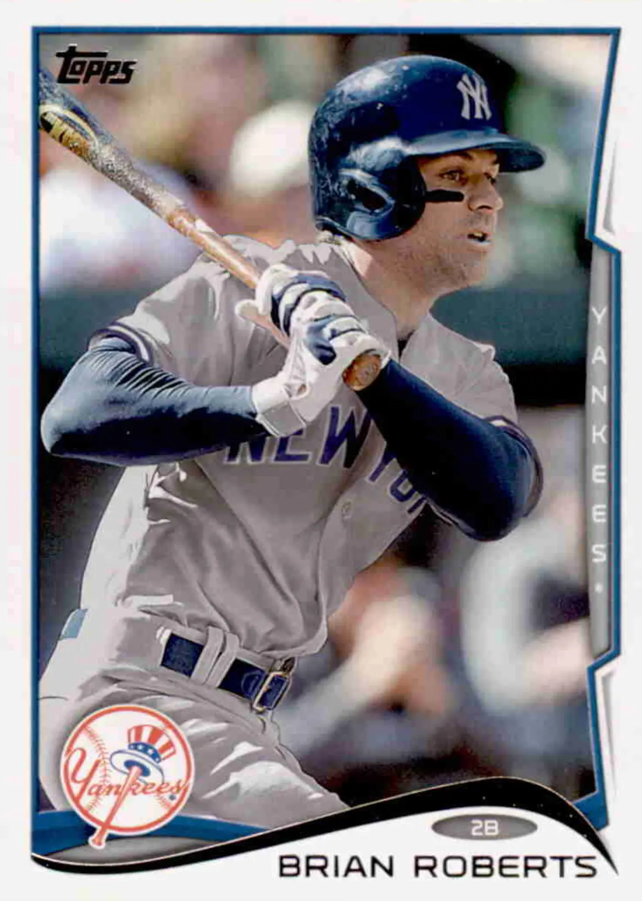

Brian Roberts "B-Rob"
Career Highlights & Facts
(Facts are AI-generated and may require verification)
- Led the league in doubles twice during a single campaign.
- Became the first switch-hitter in major league history to record at least 45 doubles, 15 home runs, and 20 stolen bases in one season.
- Successfully stole third base 19 times in a single season, setting a club record.
Would you like to find out more about Brian Roberts?
Player Biography
Brian Roberts
December 21, 2025
/
in
BioProject - Person
2000s All-Stars
/
by
admin
This article was written by
Diane MacLennan
From 2001 through 2013, Brian Roberts was a solid fan favorite with the Baltimore Orioles. He earned that status as one of baseball’s premier second basemen and leadoff hitters. Known as B-Rob to fans and players, the two-time All-Star led the American League in doubles twice, with 50 in 2004 and 56 in 2009. At his peak, he was one of the most consistent extra-base threats in the league.
A compact 5-foot-9 and 175 pounds, Roberts was a sparkplug at the top of the order. He had a strong on-base percentage and could disrupt pitchers early, setting the tone for the Orioles’ offense. His quickness and smart baserunning made him a perennial stolen base threat — he led the AL in steals with 50 in 2007 and totaled 285 in his career. In 2005, he became the first switch-hitter in big league history with 45 or more doubles, 15 or more home runs, and 20 or more steals.
In the field, Roberts never won a Gold Glove. Even so, he had a career fielding percentage of .9865 as a second baseman – evidence that he was steady and surehanded. The stats also show that the converted shortstop’s range was at times above the AL average. In its 2006 Almanac,
Baseball America
ranked Roberts as the AL’s top defensive second baseman.
Plagued by a string of injuries, Roberts’ fine career ended at age 36 after a final season in 2014 with the New York Yankees. But when he was healthy, he brought an exciting, high-energy style of play that made him stand out during a challenging era for the Orioles franchise. Despite playing during a largely uncompetitive period for Baltimore, Roberts remained a constant presence and leader — his loyalty and work ethic earned deep respect. His name often comes up in conversations about the best second basemen in club history.
Off the field, Roberts – a devout Christian – was active in the community and widely seen as approachable and humble, further endearing him to Orioles supporters. Inspired by his own childhood experience with heart surgery, he and his wife have supported the University of Maryland Children’s Hospital through their many charitable events. His relationship with this hospital motivated the most notable such endeavor, Brian’s Baseball Bash, which he launched in 2006. The annual Bash became a popular way for fans to be involved in helping to raise funds for the hospital. He began by visiting kids there. Looking back, Roberts remarked, “I could relate to the kids, and I hoped they could find hope in someone playing MLB after going through that as a child. So, after I had established my career more, we not only wanted to visit the kids but raise money to support the hospital.”
1
***
Baseball runs deep in the Roberts family. Brian’s grandfather, Ed Roberts, was born in 1910 in Kingsport, Tennessee. Having only a fifth-grade education, he started a lumber company, but his true love was baseball. Kingsport had a minor league team, and eventually, Ed Roberts became part-owner. His son, Thomas Michael Roberts (Mike), was born on March 1, 1950. Ed passed many of his baseball hopes and dreams on to Mike, who later became a catcher for his high school team.
2
When a teammate received a scholarship to play at the University of North Carolina (UNC) at Chapel Hill, Mike decided to follow because of the school’s very strong athletic department. He was a catcher for the Tar Heels and was All-ACC (Atlantic Coast Conference) from 1969 through 1972.
Mike met Nancy Richbourg while they were students at UNC; they were married after an eight-month courtship. Mike was drafted by the Kansas City Royals in the 34th round in June 1972. In his second and final pro season, 1973, he played in Waterloo, Iowa. He and Nancy moved across the state to Sioux City, where she took jobs as a substitute teacher whenever she could since full-time work as a teacher was scarce. Angie Lynn Roberts was born in 1974; with the new arrival and realizing that pro ball was not going to work for them, they decided to move back to Chapel Hill in 1975. Enrolled at UNC as a graduate student, Mike got a job as the assistant coach of the baseball team.
Brian Michael Roberts was born on October 9, 1977, in Durham, North Carolina. When the little boy was less than a year old, Mike Roberts became the Tar Heels’ head baseball coach when his predecessor, Walter Rabb, retired after 31 seasons. Roberts held the job through 1998, surpassed in victories only by his successor, Mike Fox. He coached numerous future big leaguers; along with his son, the most notable are
B.J. Surhoff
and
Walt Weiss
, both of whom were the younger Roberts’ greatest baseball influence.
3
When Brian Roberts was two years old, he got a cold that progressed into pneumonia. During his time in the hospital, the doctors discovered a heart murmur. After doing tests, his doctors discovered he had a heart abnormality known as atrial septal defect (ASD), which is a hole in the wall (septum) that separates the two upper chambers of the heart (atria). The doctors decided to delay surgery and monitor the heart to see if it would heal on its own. Unfortunately, by the time Roberts was five years old, the hole had grown to the size of a quarter.
4
After successful surgery, his parents kept him out of school the following year. His mom knew that for him to become a major leaguer, he couldn’t sit around the house all day, so she would throw him batting practice in the back yard. It wasn’t long before the young Roberts played ball games in the yard; he learned base-stealing skills from playing the game of Pickle.
Roberts was not “born again.” He grew up in a Christian home and spent a lot of time at church as a child. When his father was a coach at UNC, they became involved with the Fellowship of Christian Athletes. His mother was a spiritual warrior, offering him a strong faith-based foundation as he was growing up; however, she did not force her son to practice Christianity. Roberts had the foundational principles of the Christian faith growing up, but the relational aspect came to him as a freshman at UNC.
5
In 1997, after graduating from Chapel Hill High School, Roberts was a freshman at UNC. He played college baseball for the Tar Heels under his father. He had the second-highest batting average in the ACC at .427; his 102 hits included 24 doubles, and he also stole 47 bases. He was named to the National Collegiate Baseball Writers Association’s second team and Collegiate Baseball third team. During his sophomore year in 1998, Roberts had a batting average of .353 with 21 doubles and 63 stolen bases, more than any other player in college baseball that year. He was named ACC Player of the Year and was only the fifth Tar Heel to win that honor.
6
After 22 years with UNC baseball, it shocked everyone when Mike Roberts submitted his resignation effective after the 1998 season.
7
Thus, Brian Roberts decided to transfer to the University of South Carolina, a member of the Southeastern Conference (SEC). He became the Gamecocks’ starting shortstop and was a member of the All-SEC team. Baseball America named him the best defensive collegiate player; on offense, he led the nation in stolen bases with 67 and hit .353 during the 1999 season.
8
With an impressive college career, Roberts was selected in the first round of the 1999 amateur draft (50th overall) by the Orioles, who gave him a signing bonus of $650,000. Roberts was signed by Lamar North, an Orioles scout from 1982-2006. North was also credited with signing
John Shelby
,
Ben McDonald
, and (later)
Nick Markakis
. In 47 games for the Delmarva (Maryland) Shorebirds of the Class A South Atlantic League, Roberts hit. .240 with 21 RBIs and 17 stolen bases. At that time, he was still a shortstop.
He played for two teams in 2000. After playing the first four games of the season with the Frederick (Maryland) Keys of the Class A-Advanced Carolina League, Roberts had surgery on April 25 to remove bone chips from his right elbow. In June, he rehabbed in Sarasota with the Orioles’ Rookie League Gulf Coast affiliate, hitting .310 in nine games. In the field, he remained exclusively at short.
9
He returned to the Keys on July 14 and completed the season batting .301 in 48 games for the club.
Baseball America
rated him Baltimore’s 10th-best prospect.
The following season he was promoted to the Double-A Bowie (Maryland) Baysox and then to the Triple-A Rochester Red Wings, batting a combined .277 with two homers and 19 RBIs in 66 games. He saw some action at second base for the first time with Bowie.
It was mid-June 2001 when Roberts got a call in the middle of the night from the Rochester team trainer, Dave Walker. Baltimore shortstop
Mike Bordick
was injured and Roberts would be making his major league debut as the starting shortstop for the Orioles on June 14, 2001, against the New York Mets. He went 1-for-4, helping Baltimore to a 5–2 win. A 15-game hitting streak followed, but the long season took its toll and he began to struggle at the plate. Roberts ended the season batting .253 with 12 stolen bases, 12 doubles, and 42 runs scored in 75 games with the Orioles. He was used mostly at short but appeared in 12 games at second.
After spring training in 2002, Bordick was back at shortstop and Roberts was sent down to Triple-A Rochester. However, he was called up again in mid-season when leadoff hitter and second baseman
Jerry Hairston Jr.
was struggling. The two shared playing time until Roberts was sent back down to Rochester in mid-July to work on his hitting because he continued to have difficulty at the plate.
10
During the offseason, he spent time working out at Athletes’ Performance facility in Tempe, Arizona; his regimen there was more scientifically based. Roberts traveled to Puerto Rico play in the winter league therefor the Leones de Ponce, where he tied for tops in the league with 57 hits and 12 steals. His .417 OBP ranked second; his .322 average third.
Commenting on his move from shortstop to second, Roberts cited several reasons. “After my first year in the major leagues playing shortstop, Mike Bordick came back, so there wasn’t an opening there. I assume the Orioles felt that [second] would be the best position for me in the long term as well. The transition was tough at first, but I’d say after about a year it felt completely normal.”
11
The hard work in Arizona paid off. Roberts started 2003 in Triple-A Ottawa, hitting .315 during the first month and a half of the season. Then on May 20, 2003, Hairston broke a bone in his right foot when he caught it on the edge of home plate on a hard swing at a pitch in the second inning against the Anaheim Angels.
12
Roberts was called up to replace the injured Hairston at second base. In his second game, on May 22, he hit his first grand slam. It came in the top of the ninth inning for a come-from-behind 7-4 win against the Angels. In 112 games that season, Roberts finished hitting .270 and stole 23 bases in 29 attempts, which tied him for eighth in the American League.
Spring training in 2004 found both Roberts and Hairston on the roster. When Hairston fractured his finger that spring, Roberts became the Orioles’ Opening Day starter at second base. When he returned from the disabled list, Hairston was moved to right field, cementing Roberts’ position as the Orioles’ second baseman. In the second week of August, he was named American League Player of the Week with a batting average of (15-for-29) .519. He finished 2004 with a .273 average, four home runs, 53 RBIs, and 50 doubles. The last-mentioned figure led the American League and was the third best in the majors. It also broke Baltimore’s single-season record for doubles, then held by
Cal Ripken Jr.
, and the single-season AL record for doubles by a switch-hitter.
Roberts’s 2005 season started spectacularly, and he was on a path to set career records in several categories. He led the AL in batting average for the first several months of the season. He showed an increase in power at the plate with an explosive first half and in April was the American League Player of the Month. Fans rewarded him by voting him as the starting second baseman in the 2005 All-Star Game, his first such appearance.
Not only was Roberts the AL’s April Player of the Month, but he also shattered his previous season-high for homers before that month was over. Shockingly, the Orioles held first place in the AL East through June 23. On June 28, Roberts beat the Yankees with his first career walk-off homer. Unfortunately, as the season progressed, Roberts’ numbers declined, and the Orioles tumbled in the standings. Despite Roberts’ struggles through the second half, the media covering the club voted him the Most Valuable Oriole. By WAR, Roberts was the AL’s second most valuable position player overall. He ranked sixth in AL O-WAR and D-WAR. Following the Birds’ promising start, manager Lee Mazzilli was fired and the Orioles finished with a losing record for the eighth of what stretched to 14-straight seasons.
Roberts’ season came to an abrupt end on September 20 when he dislocated his elbow in the bottom of the second inning on a collision at first base with the New York Yankees’
Bubba Crosby
.
13
Roberts was covering first base as B.J. Surhoff fielded Crosby’s bunt. Crosby crashed into Roberts’s outstretched left arm, snapping it back. The injury required surgery to reattach the pronator flexor tendon.
14
Roberts’ resilience was evident in 2006 despite spending the early part of May on the 15-day disabled list with a strained left groin. In 138 games, his season wrapped up with a .286 batting average, 55 RBIs, and stealing 36 bases in 43 attempts. On July 31 versus Seattle’s
Gil Meche
, Roberts hit his only career homer onto Eutaw Street alongside
Oriole Park at Camden Yards
.
At the end of the 2006 season, Roberts became embroiled in steroid use controversy. On behalf of the Commissioner’s Office, former US Senator George Mitchell conducted a 20-month investigation into the use of performance-enhancing drugs by major league players. As noted in the Mitchell report,
Larry Bigbie
and Roberts were rookies in 2001 and living at the home of teammate
David Segui,
who admitted to using steroids and human growth hormone. The report stated that Bigbie and Segui used steroids in the house, but that Roberts did not participate.
15
According to Bigbie, in 2004 Roberts did admit to him that he injected himself once in 2003.
In 2007, Roberts released the following statement: “In 2003, when I took one shot of steroids, I immediately realized that this was not what I stood for or anything that I wanted to continue doing. I never used steroids, human growth hormone or any other performance-enhancing drugs prior to or since that single incident. I can honestly say before God, myself, my family, and all of my fans that steroids or any performance-enhancing drugs have never had any effect on what I have worked so hard to accomplish in the game of baseball. I am very sorry, and I deeply regret ever making that terrible decision.”
16
Orioles’ owner Peter Angelos followed by adding, “We commend Brian for acknowledging a serious and uncharacteristic past error in judgment. As an Oriole, Brian has not only been a favorite of fans, who have followed his on-field accomplishments, but he has established a remarkable record of service and devotion to the community – one rarely matched by professional athletes.”
17
Having claimed that he used performance-enhancing drugs only once, he thus went undisciplined by the league. Roberts admitted he was embarrassed and chastened by his lapse in judgment.
18
Despite the distraction, Roberts had a stronger 2007 season. Playing in 156 games, he recorded a batting average of .290, 57 RBIs, and a .377 OBP, setting career-high marks in base hits and walks. His 50 stolen bases were also a career high, and it tied him with Tampa Bay’s
Carl Crawford
for first in the American League. That season Roberts stole third base 19 times in 20 attempts. The 19 steals of third remain the Orioles club record, and no one in MLB had more in one season during the 2001-2010 decade. (
Willy Taveras
of the Colorado Rockies also had 19 in 2008.)
Undeterred by trade rumors and a tight lower back during spring training, Roberts hit two more career milestones the following season. On June 24, 2008, he went 3-for-5 against the Chicago Cubs. His third hit of the game was his 1,000th career base hit. On July 28, he hit his 250th career double against the New York Yankees. For the only time in his years as an everyday player (2003-2009), Roberts had a higher OPS against left-handed pitchers.
In the offseason, Roberts and the Orioles agreed to a four-year contract extension worth $40 million, which secured him through the 2013 season. Also, in January 2009, Roberts married his girlfriend, actress Diana Chiafair. Following an injury to Boston’s
Dustin Pedroia
, Roberts was added to the 2009 World Baseball Classic (WBC) USA roster and hit .438 with one home run, two doubles, and two RBIs. Team USA lost to Japan in the semifinals.
After appearing in the WBC, Roberts put together his last uninterrupted season in 2009. It was one of his most productive. In 717 plate appearances, he produced 179 hits, resulting in a .283 batting average in a career high 159 games. His league-leading 56 doubles broke the single-season big league mark for switch-hitters, set in 2001 by
Lance Berkman
, who had 55 doubles. (
José Ramirez
tied Roberts’ mark in 2017.) He also reached a career high in RBIs (79), and his 16 homers were his second-best yearly total.
Roberts was voted his second Most Valuable Oriole award. In what was a big deal at the time, his third 50-double season was a feat that only three Hall of Famers had previously achieved:
Paul Waner
,
Stan Musial
and (five times)
Tris Speaker
. It was also Roberts’ third campaign with 50+ doubles, 100+ runs, 70+ walks and 25+ steals. Only four players had accomplished that feat previously, and they each did it only once: Speaker,
Kiki Cuyler
,
Craig Biggio
, and
Bobby Abreu
. Also, Roberts was successful on all 14 of his attempts to steal third in 2009 – best in the AL.
From 2010 through 2013, Roberts suffered many injuries, beginning with a herniated disc in his lower back which caused him to miss much of spring training in 2010. He was able to play on Opening Day; however, he soon landed on the disabled list with an abdominal strain incurred stealing second base on April 10. Roberts returned to the lineup on July 23, but on September 27 he suffered a concussion when he hit himself on the head with his bat out of frustration. In the end, he appeared in only 59 games during the 2010 season.
In 2011, Roberts suffered a second concussion on May 16 when he slid into first base headfirst. His ensuing symptoms got more intense and included dizziness, nausea, and disorientation. He was out for the remainder of the season. Roberts was 33, and a number of doctors urged him to retire. Instead, Roberts went to see Micky Collins, PhD and the team of experts at The University of Pittsburgh Medical Center (UPMC) Sports Medicine Concussion Program.
19
After a series of tests and examinations, Dr. Collins diagnosed Roberts with vestibular concussion, which impedes balance, vision, and movement. A recovery program specifically designed for Roberts allowed him to be cleared to return to baseball and start at second base in mid-2012.
After returning to the Orioles on June 12, he played 17 games before returning to the DL on July 3 with a groin strain and having season-ending hip surgery on July 29. In those 17 games, he hit just .182 in 66 plate appearances.
Roberts’ long tenure with the Orioles ended in 2013. He was the Orioles’ Opening Day second baseman for the ninth time (in 10 years – he missed 2012), surpassing
Rich Dauer
‘s franchise record. Unfortunately, he added another injury to his long list. On April 4 he ruptured a tendon behind his right knee while stealing second base in the ninth inning against the Tampa Bay Rays. After being reactivated on June 30, the infielder ended the season playing in 77 games and posting a batting average of .249.
The following January, the Yankees took a chance in signing Roberts to a one-year deal for $2 million after
Robinson Canó
signed with the Seattle Mariners as a free agent.
20
Roberts continued to struggle with a .237 batting average in 91 games, and the Yankees decided to release him in August 2014, ending his baseball career. After turning 37 in October 2014, Roberts announced his retirement from baseball on October 17.
21
“It was just kind of my time,” he told Dan Connolly of the
Baltimore Sun
. “There were numerous reasons that I felt like I couldn’t play at a level that I was accustomed to and wanted to play at if I continued … I always said that I wasn’t going to be the guy that tried to hang on as long as I could.” When asked to describe the highlight of his career, Roberts said it was an honor to start in his first All-Star game in 2005.
22
In 2018, the Orioles announced that Roberts would be joining Joe Angel and Jim Hunter as part of their radio broadcast team as a color analyst.
23
Roberts provided color analysis for about 20 games in 2025 and currently serves as a team ambassador and guest coach.
On February 25, 2025, Roberts spoke to MLB Hot Stove hosts to discuss what it was like being the Orioles guest coach for spring training in Sarasota, Florida.
24
“If you look at the young position players in this organization, it is really a treat to get to work with them.”
Brian and Diana have two biological children, Jax and Nash, and spent several years fostering children after his retirement in 2014.
25
In 2020, when the COVID-19 pandemic hit, the couple continued to make a positive impact in Sarasota and the wider Birdland community. Early in the pandemic, they partnered with The Child Protection Center to film a public service announcement about child abuse prevention and treatment during a period of rising domestic violence. That year, they also supported local families through Mothers Helping Mothers and assisted Sarasota residents facing food insecurity with Visible Men Academy’s student meal program. In September 2020, the couple adopted a five-month-old baby boy, Cru Immanuel Roberts.
26
Brian Roberts remains an enduring favorite among Orioles fans, and for good reason. According to the Birdland Network, Roberts was admired because he was a star switch-hitter, a loyal and charitable member of the Baltimore community, and a bright spot for the team during many losing seasons. His on-field success and commitment to the city earned him induction into the Orioles Hall of Fame in 2018.
Last revised: December 21, 2025
Sources
In addition to the sources cited in the Notes, the author consulted Baseball-Reference.com, the Orioles media guide collection at MLB.com, as well as
www.officalbrianroberts.com
(although this site appears long dormant) and
www.dianachiafair.com
.
Acknowledgments
Special thanks to Brian Roberts for interviews on August 12, 2025, and October 16, 2025.
This biography was reviewed by Rory Costello, Malcolm Allen, and Bill Lamb and fact-checked by Dan Schoenholz.
Notes
1
Brian Roberts, telephone interviews with Diane MacLennan, August 12, 2025, and October 16, 2025 (hereafter Roberts-MacLennan interviews).
2
Bill Staples and Rich Herschlag,
Before the Glory
(Deerfield Beach, Florida: Health Communications, Inc., March 2007), 1-23.
3
Roberts-MacLennan interviews.
4
Bruce Lowitt, “Roberts’ heart in right place
,
” MLBPlayers.com, April 6, 2011 (
https://web.archive.org/web/20160107050250/http://mlb.mlb.com/pa/news/article.jsp?ymd=20110406&content_id=17430056&vkey=mlbpa_news&fext=.jsp
).
5
Sports Spectrum podcast – interview with Matt and Leslee Holliday, February 16, 2021 (
https:
).
6
“
Emanuel and Moran Take ACC Top Honors, North Carolina Tar Heels,
”
UNC Athletic Communications, May 20, 2013 (
https://goheels.com/news/2013/5/20/207723181
).
7
Victor Zhao, “Resignation brings end for UNC’s father-son tandem,”
The Chronicle
, March 31, 1998 (
https://web.archive.org/web/20131217221550/http:
).
8
Staff, “Former Gamecocks All-American Brian Roberts elected to Orioles Hall of Fame,” GamecockCentral.com, March 22, 2018 (
https:
).
9
2001 Orioles Media Guide, 172.
10
“Orioles: A Look Inside,”
Baltimore Sun
. July 14, 2002: D1.
11
Roberts-MacLennan interviews.
12
Sports News, Orioles put Hairston on DL, May 21,2003
https://www.upi.com/Sports_News/2003/05/21/Orioles-put-Hairston-on-DL/43421053544304
13
“
Roberts has ligament, tendon damage in elbow,
”
ESPN.com, September 21, 2005 (
https://www.espn.com/mlb/news/story?id=2167909
).
14
Associated Press, September 21,2005, Roberts leaves with arm injury
https:
.
15
The Mitchell Report, 158 (
https://files.mlb.com/mitchrpt.pdf
).
16
Spencer Fordin, “Roberts acknowledges steroid use,” MLB.com/Orioles.com, December 18, 2007.
17
Jeff Zrebie, “Apology accepted, O’s say. Coping with fallout, Roberts gets support from Angelos, teammates,”
Baltimore Sun
, December 19, 2007: Z4.
18
Spencer Fordin, “Roberts, Gibbons talk candidly,
”
MLB.com, February 19, 2008.
19
“The Challenge: The Threat of an Early Retirement,” UPMC.com, (
https:
).
20
Spencer Fordin,, “Roberts officially signs one-year deal with Yankees,” MLB.com, January 14, 2014 (
https:
).
21
“Brian Roberts announces retirement from baseball,” CCBL Public Relations Office, October 2014 (
https://ism3.infinityprosports.?article_id=1942
).
22
Roberts-MacLennan interviews.
23
Brandi Proctor, “Orioles All-Star Brian Roberts Joins Orioles Radio Network,” FoxBaltimore.com, February 16, 2018 (
https:
).
24
“Brian Roberts on being a guest instructor, more” MLB Network, February 25, 2025 (Video –
https://www.mlb.com/video/brian-roberts-on-being-a-guest-instructor-more
).
25
Sports Spectrum podcast – interview with Matt and Leslee Holliday, February 16, 2021.
26
Liam Davis, “Orioles Community Ambassador Brian Roberts Continues to Make an Impact in Hometown of Sarasota,” MLB.com, March 15, 2021 (
https:
).
Full Name
Brian Michael Roberts
Born
October 9, 1977 at Durham, NC (USA)
Stats
Baseball Reference
Retrosheet
Tags
2000s All-Stars
·
Career Totals
| WAR | AB | H | HR | BA | R | RBI | SB | OBP | SLG | OPS | OPS+ |
|---|---|---|---|---|---|---|---|---|---|---|---|
| 29.5 | 5531 | 1527 | 97 | .276 | 850 | 542 | 285 | .347 | .409 | .756 | 101 |
Statistics via Baseball-Reference.com
The Original Clue